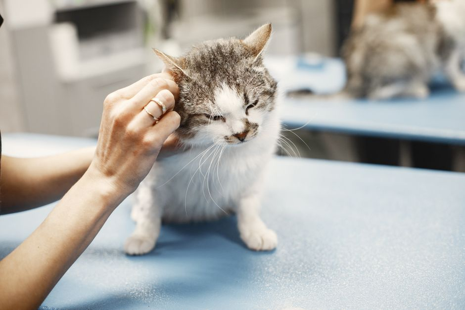

How to Organize an Annual Veterinary Check-Up for Your Pet

Photo: Gustavo Fring / Pexels
Even a healthy dog or cat needs a check-up every year. The veterinarian can spot a weight, dental or skin problem early, before it becomes costly or painful. Here is how to prepare the visit so you get the most from it.
How often to go
A healthy adult animal usually sees the vet once a year. Puppies and kittens need closer visits for vaccines and growth. Senior pets and those with a chronic condition often go more often: your veterinarian sets the schedule.
Prepare your observations
A few days before the appointment, write down what you have noticed:
- changes in appetite, thirst or weight;
- vomiting, diarrhea, coughing or sneezing;
- low energy, limping, frequent scratching;
- changes in behavior or sleep.
A photo or short video of unusual behavior often helps more than a long explanation.
Bring the right documents
- the vaccination record and results from earlier visits;
- the name of the food, treats and parasite products you use;
- a list of any medication or supplement your pet takes;
- a stool sample if the clinic asked for one.
Make the trip easier
A cat travels in a hard carrier, left open at home for a few days so it gets used to it. A dog travels on a short leash or in a suitable crate. Ask the clinic whether your pet should come on an empty stomach.
What happens during the visit
The vet weighs your pet, listens to the heart and lungs, and checks the eyes, ears, mouth, skin and joints. They will talk to you about vaccines, parasite prevention, diet and dental care. Ask about anything that worries you, and ask for the plan in writing if you need it.
After the visit
Follow the vet's advice and book the next appointment before you leave. Do not start or stop any treatment on your own.
A yearly check-up costs little compared with treating a problem found late, and it gives you a chance to ask a professional every question you have.
Recommended products
As an Amazon Associate, I earn from qualifying purchases.